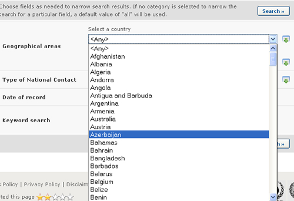
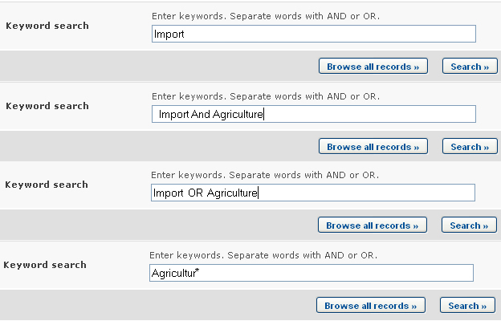
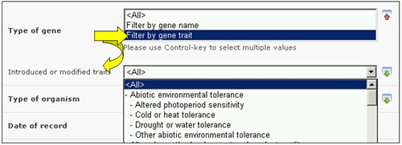

The Finding Information section of the BCH provides web pages to search for each category of information in the BCH. To access a searchable database of interest, click on the link either on the Main page or in the left-hand menu. These web pages are designed to let the user specify the search criteria and then display the records found which match the search criteria used.
All search pages have a similar and consistent design. Let us take the Search for National Contacts page as an example.

The search page contains:
-
A brief description of the search page and the type of information that can be found through it.
-
The search criteria input area.
-
The Search buttons.
-
The Browse all records button.
The criteria that can be used are given by the input boxes that appear on the search page of each category of information. The input boxes are used to narrow the search results, i.e. they can be used to obtain a smaller and more specific set of records, but never a wider one.
Several types of input boxes (also called fields) can be found in the criteria input area. Many of these types of fields are also found in the search pages of other categories of information. The following list describes these field types, which are shared among several categories of information:
- Selection list field: Fields of this type contain a list of pre-defined terms. This means that the user cannot input any term in the field, but must select terms from that pre-defined list. The list of terms is populated from a controlled vocabulary (see http://bch.cbd.int/help/faq/#THE ). The most common example of this type of field is the Country field, which allows the user to narrow the search results to records regarding a specific country. Another example of this type of field is the Region field, which allows narrowing the search results to a specific region in the world. Please note that the Country and the Region fields cannot be used together: only one of them can be used at a time. The default setting for each selection list field is the first item at the top of the menu list. It is also possible to select more than one term from the list, and this is covered in “Using multiple selection”.

- Date of record field: Fields of this type allow for narrowing the search results to a specific time interval.

-
Keyword field: Fields of this type allow narrowing the search results to records that have specific keywords. A single keyword may be entered, or a combination of keywords using the standard keyword syntax explained below. Please notice that a search that is made by using keywords only produces results of records containing exactly the searched text and not possible synonyms that have not been inserted (i.e. a search with the single keyword “Maize” will produce a list of records containing the word “Maize” but not the words “Corn” or “Zea mays”)
-
AND: if two keywords are combined using the AND operator (see picture) then only records containing both keywords will be returned
-
OR: if two keywords are combined using the OR operator (see picture) then records which have at least one of the words will be returned.
-
Asterisk: the user may enter part of a keyword followed by an asterisk (see picture) so that records with keywords which start with the text entered are returned. For example, if “Agricultur*” is entered, then all records with keywords beginning with “Agricultur”, such as “Agriculture” and “Agricultural”, will be returned.
-

-
Fields for adding additional search criteria: Some categories of information contain fields that allow the user to add more search criteria to the search criteria area. For example, in the Search for LMOs, Genes and Organisms page there is a field called Type of living organism for adding additional search criteria to define how to search for living organisms. Selecting an option in that field will make a new field appear in the search criteria area. For example, if the user selects the “Filter by gene trait” option, then a new selection list field called Introduced or modified traits will appear. The user may then select a term from the pre-defined list of terms of that field so as to narrow the search results to a specific gene trait. However, the user could have selected the “Filter by gene name” option before in order to make a field called Gene appear and thus narrow the search results to records of a specific gene.

Fields of this type are similar in appeareance to Selection List fields but absolutely different in their operation. One distinctive aspect of these fields is that all their options begin with “Filter by”. Note that several new search fields may be added by selecting more than one option from the additional criteria field; please see “Using multiple selection”.
Finally, the Search button performs the search based on the specified criteria and then shows the search results, while the Browse all records button displays all records in the current category of information.